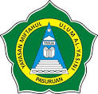

Judul Artikel
Judul Artikel
Pondok Pesantren Terpadu Al-Yasiini berdiri pada tahun 1940. Nama Pesantren Al-Yasini diambil dari perintis dan pendiri pesantren yaitu KH. Yasin bin Abdul Ghoni. Pada mulanya kegiatan pesantren berbentuk pengajian kalongan bertempat di musholla diikuti santri yang mukin maupun masyarakat santri yang tinggal di sekitar pesantren. Pada tahun 1951 KH. Yasin bin Abdul Ghoni wafat sehingga kepemimpinan pesantren dikendalikan oleh Ibu Nyai Chusna. Dengan penuh keteladanan dan kesabaran yang tinggi, pesantren terus menunjukkan eksistensinya sehingga para santri dengan istiqomah dapat belajar dan mengembangkan diri melalui pemahaman agama dan kecakapan serta keterampilan hidup. Berita wafatnya Mbah Yasin memaksa KH. Imron Fatchullah untuk pulang nyantri dari Pondok Pesantren Sidogiri dan segera membantu Nyai Chusna mengurus Pesantren Al-Yasini dan mengajar kitab kepada santri dengan dibantu kakaknya yaitu Kiai Aji Nuryasin. Dua tahun berikutnya yakni tahun 1953 pesantren dipimpin oleh putra bungsu beliau bernama KH. Imron Fatchullah, Di bawah kepemimpinan KH. Imron Fatchullah, pesantren mulai mengembangkan pendidikan formal melalui jalur pendidikan Madrasah Diniyah kurikulum pesantren. Di bawah kepemimpinan KH. Imron Fatchullah (wafat 30 Agustus 2003), pesantren ini mulai menunjukkan gairah pendidikan menatap masa depan. Para santri mulai berdatangan dari berbagai daerah. Pada tahun 1963 didirikan pondok pesantren putri, menyusul pada 1980 berdiri pondok pesantren putra. Untuk memenuhi kebutuhan pendidikan masyarakat dan keberlangsungan kaderisasi kepemimpinan pesantren, maka pada tahun 1984 pesantren mendirikan Madrasah Muallimat. Pada masa kepemimpinan KH Imron Fatchullah, beliau banyak memberikan pendidikan tentang leadership dan kemandirian kepada para santri serta pola pengembangan pesantren kepada generasi calon penerus majlis keluarga untuk mengembangkan pesantren dengan menanamkan disiplin, bekerja keras dan ikhlas termasuk kepada KH. A Mujib Imron, SH yang saat itu secara istiqomah bersama Alm. KH. M Ali Ridlo mendampingi kepemimpinan KH.Imron Fatchullah. makin menguat sehingga penyelenggara pesantren dan pendidikan formal terus berupaya memenuhi kebutuhan peserta didik dan santri baik kebutuhan fisik dan sarana gedung maupun infrastruktur yang lain. Seiring dengan usia Ayahanda yang makin tua maka pada tahun 1990 estafet kepemimpinan pondok pesantren diamanatkan KH. A. Mujib Imron, SH., MH. (saat itu menjabat Ketua PCNU Kab. Pasuruan). Di bawah kepemimpinan Gus Mujib bersama KH. M. Ali Ridlo (Alm) beserta ke empat saudaranya ( Dr.Ir.H. Achmad Fuadi, Msi., Hj. Masluchah, Hj. Chanifah dan Hj. Ilvi Nurdiana, M.Si ), Pesantren Al-Yasini terus berkembang pesat. Pada tahun 2005 Jumlah siswa dan santri mencapai 2.178 anak, mereka datang dari berbagai daerah di Pulau Jawa dan luar Pulau Jawa sehingga kiprah pesantren semakin dikenal secara meluas. Kemudian pada 1992 pondok pesantren memantabkan diri dan makin tegak secara kelembagaan ketika dinaungi oleh Yayasan Miftahul Ulum Al-Yasini Akta Notaris Nomor: 10/1992 tanggal 30 April 1992 a.n. Ny. Sri Budi Utami, SH. Di bawah naungan Yayasan Miftahul Ulum Al-Yasini maka pondok pesantren melengkapi diri dengan mendirikan lembaga pendidikan formal di bawah kendali mutu DEPAG dan DEPDIKNAS yang terdiri dari TK, SD Islam, SMP, MTs, MA, MAK & SMK dan pendidikan nonformal (Madrasah Salafiyah, Diniyah & Lembaga Tahassus) serta semua lembaga pendukung pendidikan Al-Yasini. Pada tahun pelajaran 2006-2007 telah berdiri SMKN di lingkungan pesantren. Langkah pondok pesantren di bawah kepemimpinan Gus Mujib makin kokoh tatkala Menteri Agama RI H. Maftuh Basyuni berkenan meresmikan pondok pesantren sebagai Pondok Pesantren Terpadu Al-Yasini pada 4 Juli 2004. Sejak diproklamirkan sebagai Pesantren Terpadu, tingkat kepercayaan masyarakat makin menguat sehingga penyelenggara pesantren dan pendidikan formal terus berupaya memenuhi kebutuhan peserta didik dan santri baik kebutuhan fisik dan sarana gedung maupun infrastruktur yang lain. Hingga saat ini Pondok Pesantren Terpadu Al-Yasini memiliki beberapa lembaga pendidikan yang melengkapi kebutuhan masyarakat dalam pendidikan yaitu diantaranya TK/RA, SD IC, MTs, SMP Unggulan, SMP Negeri 2 Kraton, SMA Excellent, SMK Kesehatan, MAN Kraton, SMK Negeri, AKBID Sakinah, STAI Al-Yasini, Madrasah Diniyah, Madrasah Salafiyah, Lembaga Pengembangan Bahasa Asing (LPBA), Lembaga Pendidikan Al-Qur’an (LPQ).